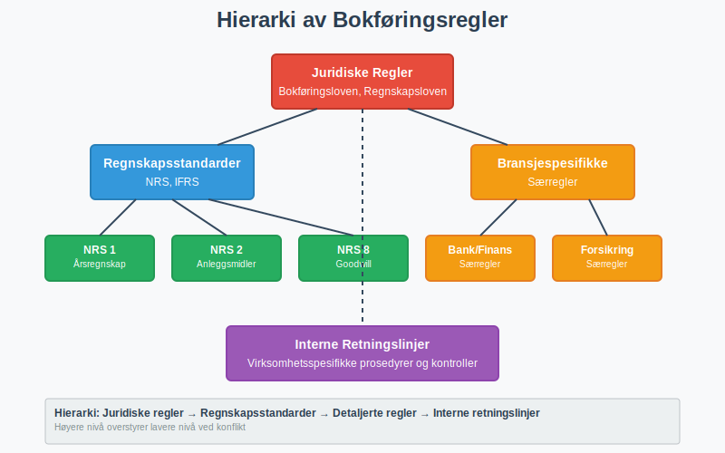
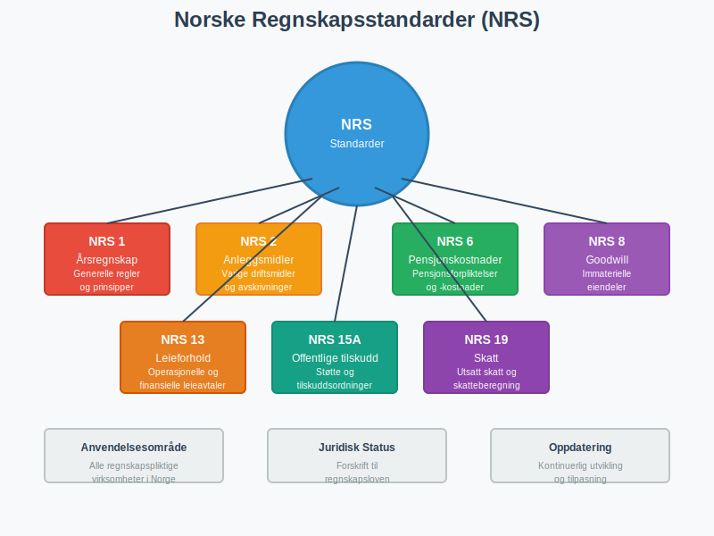
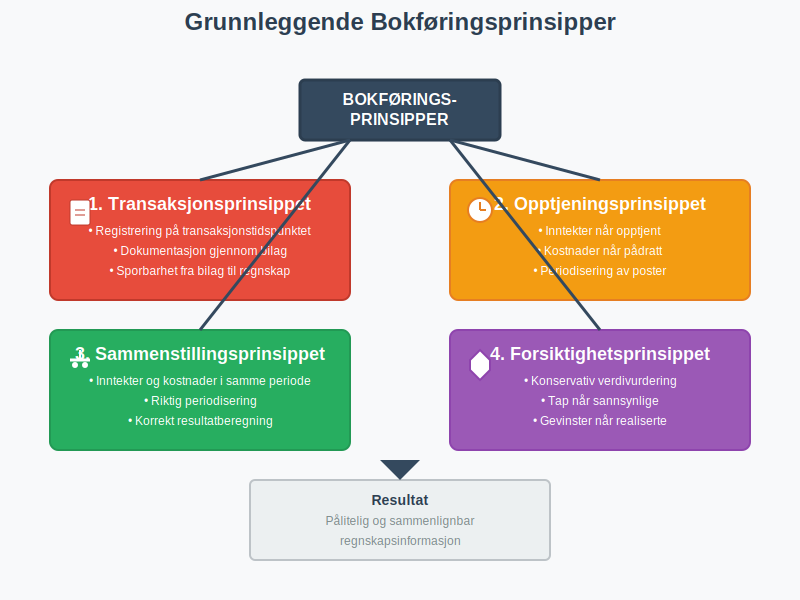
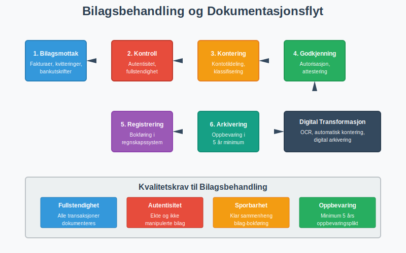
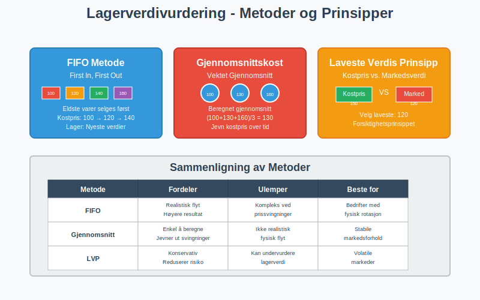
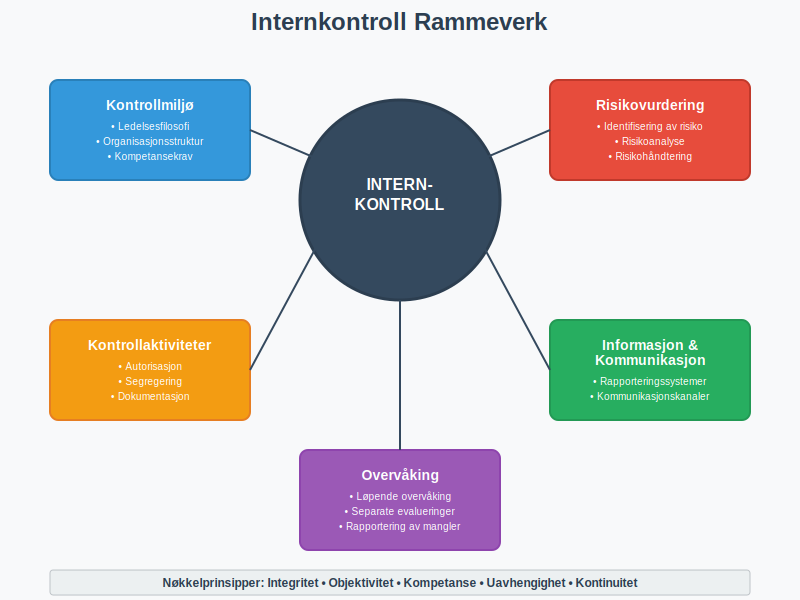
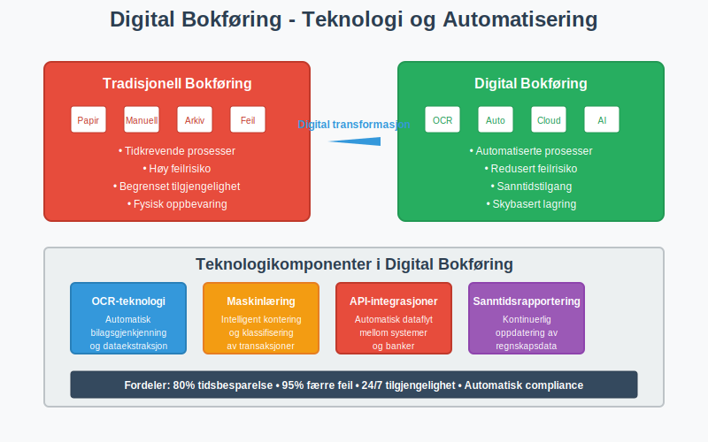
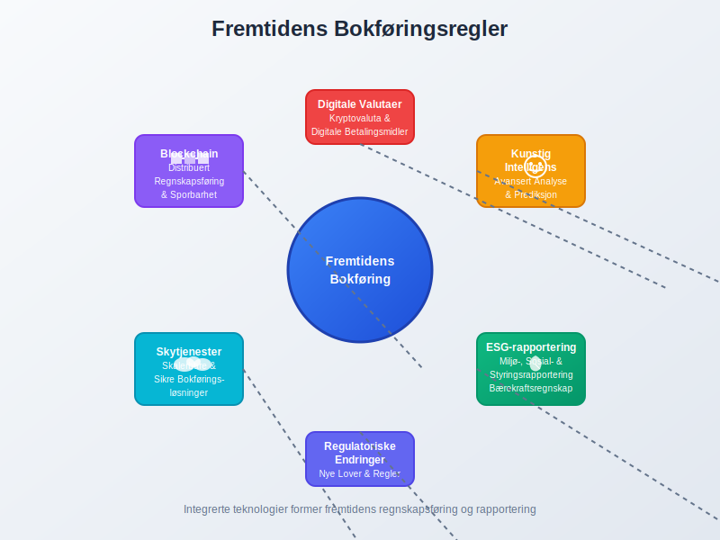

Bokføringsregler utgjør det juridiske og praktiske rammeverket som regulerer hvordan norske virksomheter skal registrere, klassifisere og rapportere sine økonomiske transaksjoner. Disse reglene sikrer konsistens, sammenlignbarhet og pålitelighet i finansiell rapportering, og danner grunnlaget for bokføring og regnskap i Norge.
Hva er Bokføringsregler?
Bokføringsregler er et sett med standardiserte prinsipper, metoder og prosedyrer som definerer hvordan økonomiske hendelser skal dokumenteres, måles og presenteres i regnskapet. Disse reglene sikrer at alle virksomheter følger samme grunnleggende standarder for finansiell rapportering.

Hovedkategorier av Bokføringsregler
- Juridiske regler: Lovpålagte krav fra bokføringsloven og regnskapslovgivningen
- Regnskapsstandarder: Norske regnskapsstandarder (NRS) og internasjonale standarder (IFRS)
- Bransjespesifikke regler: Særlige krav for spesifikke næringer og virksomhetstyper
- Interne retningslinjer: Virksomhetens egne prosedyrer og kontrollsystemer
Det Norske Regelverket for Bokføring
Lovgivningsmessige Grunnlag
Det norske bokføringsregelverket bygger på flere juridiske kilder som sammen danner et helhetlig system:
| Regelverk | Anvendelsesområde | Hovedinnhold |
|---|---|---|
| Bokføringsloven | bokføringspliktige | Grunnleggende bokføringskrav og -prinsipper |
| Regnskapsloven | Regnskapspliktige virksomheter | Årsregnskapsregler og rapporteringskrav |
| Bokføringsforskriften | bokføringspliktige | Detaljerte gjennomføringsbestemmelser |
| Regnskapsforskriften | Regnskapspliktige virksomheter | Spesifikke regnskapsregler og standarder |
| Skatteloven | Alle skattepliktige | Skattemessige bokførings- og rapporteringskrav |
Norske Regnskapsstandarder (NRS)
NRS utgjør det tekniske rammeverket for regnskapsføring i Norge og dekker spesifikke områder som:
- NRS 1: Årsregnskap - generelle regler
- NRS 2: Anleggsmidler
- NRS 6: Pensjonskostnader
- NRS 8: Goodwill og andre immaterielle eiendeler
- NRS 13: Leieforhold
- NRS 15A: Offentlige tilskudd

Grunnleggende Bokføringsprinsipper
De Fire Fundamentale Prinsippene
- Alle transaksjoner skal registreres på transaksjonstidspunktet
- Dokumentasjon gjennom bilag er obligatorisk
- Sporbarhet fra bilag til regnskap må sikres
2. Opptjeningsprinsippet
- Inntekter registreres når de er opptjent, ikke når de mottas
- Kostnader registreres når de er pådratt, ikke når de betales
- Periodisering sikrer korrekt resultatmåling
3. Sammenstillingsprinsippet
- Inntekter og tilhørende kostnader skal sammenstilles i samme periode
- Sikrer riktig periodisering av resultatposter
- Grunnlag for korrekt resultatberegning
4. Forsiktighetsprinsippet
- Konservativ tilnærming til verdivurdering
- Tap skal regnskapsføres når de er sannsynlige
- Gevinster regnskapsføres først når de er realiserte

Kvalitative Egenskaper ved Regnskapsinformasjon
| Egenskap | Beskrivelse | Praktisk Betydning |
|---|---|---|
| Relevans | Informasjonen påvirker økonomiske beslutninger | Fokus på vesentlig informasjon |
| Pålitelighet | Informasjonen er fri for vesentlige feil | Korrekt måling og presentasjon |
| Sammenlignbarhet | Konsistente metoder over tid og mellom virksomheter | Standardiserte regnskapsmetoder |
| Forståelighet | Informasjonen er tilgjengelig for brukerne | Klar presentasjon og noteopplysninger |
Praktisk Anvendelse av Bokføringsregler
Registrering og Klassifisering
Kontoplansystem: Norske virksomheter følger et standardisert kontoplansystem som sikrer konsistent klassifisering:
- Klasse 1: Anleggsmidler
- Klasse 2: Omløpsmidler og kortsiktige fordringer, se Konto 1400 - Råvarer og innkjøpte halvfabrikater for varelageret.
- Klasse 3: Egenkapital og aksjekapital
- Klasse 4: Langsiktig gjeld og avsetninger
- Klasse 5: Kortsiktig gjeld
- Klasse 6: Driftskostnader
- Klasse 7: Driftsinntekter
- Klasse 8: Finansposter
Bilagsbehandling og Dokumentasjon
Krav til bilagsføring:
- Fullstendighet: Alle transaksjoner må dokumenteres
- Autentisitet: Bilag må være ekte og ikke manipulerte
- Sporbarhet: Klar sammenheng mellom bilag og bokføring
- Oppbevaring: Minimum 5 års oppbevaringsplikt

Periodisering og Avstemming
Månedlige bokføringsrutiner:
-
Registrering av løpende transaksjoner
- Fakturaer og innbetalinger
- Lønnsutbetalinger og personalrelaterte kostnader
- Driftskostnader og investeringer
-
Periodisering av poster
- Påløpte, ikke betalte kostnader
- Forskuddsbetalte kostnader
- Opptjente, ikke fakturerte inntekter
-
Avstemming av balanseposter
- Bankavstemming
- Kundefordringer og leverandørgjeld
- Varelager og arbeidskapital
Spesielle Bokføringsregler
Anleggsmidler og Avskrivninger
Avskrivningsregler:
| Anleggsmiddeltype | Avskrivningsmetode | Typisk avskrivningstid |
|---|---|---|
| Bygninger | Lineær | 20-50 år |
| Maskiner og utstyr | Lineær/degressiv | 3-10 år |
| Transportmidler | Lineær/degressiv | 5-8 år |
| Datautstyr | Lineær/degressiv | 3-5 år |
| Immaterielle eiendeler | Lineær | 3-20 år |
Avskrivning skal reflektere den faktiske verdireduksjonen over eiendelens levetid.
Varelager og Verdivurdering
Lagerprinsipp:
- FIFO (First In, First Out): Eldste varer selges først
- Gjennomsnittskost: Vektet gjennomsnitt av innkjøpskost
- Laveste verdis prinsipp: Kostpris eller markedsverdi, det laveste

Valutaomregning
Regler for utenlandske transaksjoner:
- Transaksjonstidspunkt: Omregning til dagskurs
- Balansetidspunkt: Omregning av utestående poster til balansedagskurs
- Valutagevinster/-tap: Resultatføring av realiserte og urealiserte poster
Internkontroll og Compliance
Krav til Internkontroll
Kontrollmiljø:
- Klare ansvarsforhold og myndighetslinjer
- Kompetansekrav for regnskapspersonell
- Etiske retningslinjer og atferdskoder
Kontrollaktiviteter:
- Autorisasjon: Godkjenning av transaksjoner
- Segregering: Arbeidsdeling mellom registrering og kontroll
- Dokumentasjon: Sporbarhet og arkivering
- Fysisk sikring: Beskyttelse av eiendeler og dokumenter

Revisjonsplikt og Eksterne Krav
Revisjonsplikt gjelder for:
| Virksomhetstype | Revisjonsplikt | Grunnlag |
|---|---|---|
| Allmennaksjeselskap (ASA) | Ja, alltid | Allmennaksjeloven |
| Aksjeselskap (AS) | Ja, med unntak | Aksjeloven § 7-1 |
| Stiftelser | Avhengig av størrelse | Stiftelsesloven |
| Foreninger | Avhengig av aktivitet | Særlovgivning |
Unntaksregler for små AS:
- Salgsinntekter < 70 MNOK
- Balansesum < 35 MNOK
- Gjennomsnittlig antall ansatte < 50
Digitalisering og Moderne Bokføringsregler
Elektronisk Bokføring
Krav til digitale systemer:
- Sporbarhet: Digital revisjonsspor må opprettholdes
- Sikkerhet: Beskyttelse mot uautoriserte endringer
- Tilgjengelighet: Mulighet for kontroll og revisjon
- Oppbevaring: Sikker lagring i minimum 5 år
Automatisering og AI
Moderne teknologiløsninger:
- OCR-teknologi: Automatisk bilagsgjenkjenning
- Maskinlæring: Intelligent kontering og klassifisering
- API-integrasjoner: Automatisk dataflyt mellom systemer
- Sanntidsrapportering: Kontinuerlig oppdatering av regnskapsdata

Sanksjoner og Konsekvenser
Brudd på Bokføringsregler
Administrative sanksjoner:
- Tvangsmulkt: Daglige mulkter ved manglende etterlevelse
- Overtredelsesgebyr: Faste gebyrer for regelbrudd
- Pålegg: Krav om retting av forhold
Strafferettslige konsekvenser:
- Bøter: Økonomiske straffer for grove brudd
- Fengsel: I alvorlige tilfeller av regnskapsmanipulasjon
- Erstatningsansvar: Ansvar overfor kreditorer og investorer
Forebygging av Regelbrudd
Beste praksis:
- Kompetanseutvikling: Kontinuerlig opplæring av regnskapspersonell
- Systemoppdateringer: Holde bokføringssystemer oppdaterte
- Regelmessig kontroll: Periodiske gjennomganger av rutiner
- Ekstern rådgivning: Bruk av autoriserte regnskapsførere
Fremtidige Utviklingstrekk
Regulatoriske Endringer
Kommende regelverksendringer:
- ESG-rapportering: Miljø-, sosial- og styringsrapportering
- Bærekraftsregnskap: Integrering av bærekraftsmålinger
- Digitale valutaer: Regler for kryptovaluta og digitale betalingsmidler
Teknologisk Utvikling
Nye teknologier:
- Blockchain: Distribuert regnskapsføring og sporbarhet
- Kunstig intelligens: Avansert analyse og prediksjon
- Skytjenester: Skalerbare og sikre bokføringsløsninger

Praktiske Råd for Implementering
For Små og Mellomstore Bedrifter
Implementeringsstrategi:
-
Kartlegging av behov
- Vurder virksomhetens størrelse og kompleksitet
- Identifiser kritiske regnskapsområder
- Evaluer eksisterende systemer og rutiner
-
Systemvalg og implementering
- Velg bokføringssystem tilpasset virksomhetens behov
- Sikre integrasjon med andre forretningssystemer
- Etabler backup- og sikkerhetsprosedyrer
-
Kompetanseutvikling
- Opplæring av internt personell
- Etablering av samarbeid med autorisert regnskapsfører
- Kontinuerlig oppdatering på regelverksendringer
Kvalitetssikring og Kontroll
Kontrollrutiner:
- Månedlig avstemming av alle balanseposter
- Kvartalsvis gjennomgang av resultatregnskap
- Årlig evaluering av regnskapsprinsipper og -metoder
Dokumentasjon:
- Regnskapsinstrukser: Skriftlige prosedyrer for alle regnskapsområder
- Kontrollspor: Dokumentasjon av alle kontrollaktiviteter
- Arkivering: Systematisk oppbevaring av bilag og dokumenter
Konklusjon
Bokføringsregler utgjør det fundamentale rammeverket for finansiell rapportering i Norge og sikrer transparens, sammenlignbarhet og pålitelighet i regnskapsføringen. Forståelse og korrekt anvendelse av disse reglene er essensielt for alle virksomheter, uavhengig av størrelse eller bransje.
Nøkkelpunkter for suksess:
- Systematisk tilnærming til implementering og oppfølging
- Kontinuerlig kompetanseutvikling og oppdatering på regelverksendringer
- Robust internkontroll og kvalitetssikringsprosesser
- Proaktiv tilpasning til teknologiske og regulatoriske endringer
Ved å følge etablerte bokføringsregler og beste praksis sikrer virksomheter ikke bare lovmessig compliance, men skaper også grunnlag for bedre økonomisk styring, informerte beslutninger og bærekraftig vekst.
Effektiv implementering av bokføringsregler krever både teknisk kompetanse og strategisk forståelse av virksomhetens behov. Med riktig tilnærming blir bokføringsregler ikke bare et lovkrav, men et verdifullt verktøy for økonomisk styring og verdiskaping.